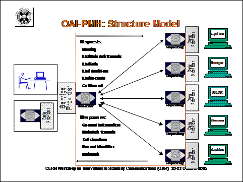

PART I: INTRODUCTION1.0 Laying the FoundationSince its founding ten years ago, the Digital Library Federation (DLF) aims to advance the goal of deep sharing of academic digital resources and services. It creates and promotes standards and strategies that will lead to an extensive, open, distributed digital library with coherent pathways for scholars to discover, access, and use meaningful content. Executive Director, David Seaman, refers to DLF's twin goals of achieving "mass and malleability" through federated content and interdependent services. The DLF, along with the Coalition for Networked Information (CNI) and the National Science Foundation (NSF), co-funded the early development of the OAI protocol (Open Archives Initiative Protocol for Metadata Harvesting or OAI-PMH) as a low-barrier means to share metadata and a technical framework to achieve cross-repository interoperability. According to Seaman, the OAI protocol is a key component of DLF's commitment to build finding systems and services that are flexible and useful in various settings for different constituents. He asserts that it provides a practical means to create a collaborative test bed that is larger and more complex than what DLF-member institutions could produce separately. Moreover, it forces developers to focus on building shareable metadata that is useful to others, who may discover a digital object outside its original context, may not share the same assumptions about its most salient characteristics, and may want to use it in new ways (Seaman 2005b). Since its initial release in 2001, OAI-PMH has become a widely accepted, international harvesting protocol for sharing metadata between services. More than 1,000 OAI-compliant archives, representing a wide variety of domains and institutions, are operational in over forty countries. OAI functionality is now a standard component of many vendor's integrated library systems and repository services. More recently, OAI's principal developers are exploring enhanced digital library systems and Web services that, among other features, could manage the transfer of diverse content as well as metadata (Lagoze et al. 2006a, Van de Sompel et al. 2004 and 2005). [[1]] As Seaman and others point out, scholars need to be able to do more than view digital content in the context of its original producer. Digital infrastructures must allow scholars to bring content into their own environment where they can apply discipline-specific tools of inquiry. As the digital content in repositories proliferates, efficient and consistent interoperability specifications are essential for effective downstream applications across a full spectrum of scholarly information arenas extending from e-research and e-learning to Web publishing and administrative computing (Hey et al. 2006; McLean and Lynch, 2004). 1.1 Aim, Scope, and MethodologyThis report updates and expands on "A Survey of Digital Library Aggregation Services," originally commissioned by the DLF as an internal report in summer 2003, and released to the public later that year. It highlights major developments affecting the ecosystem of scholarly communications and digital libraries since the last survey and provides an analysis of "OAI implementation demographics," based on a comparative review of repository registries and cross-archive search services. Secondly, it reviews the state-of-practice for a cohort of digital library aggregation services, grouping them in the context of the "problem space" to which they most closely adhere. Based in part on online survey responses collected in fall 2005 from an online survey distributed to the original core services, the report investigates the purpose, function and challenges of next-generation aggregation services. On a case-by-case basis, the advances in each service are of interest in isolation from each other, but the report also attempts to situate these services in a larger context and to understand how they fit into a multi-dimensional and interdependent ecosystem supporting the worldwide community of scholars. Finally, the report summarizes the contributions of these services thus far and identifies obstacles requiring further attention to realize the goal of an open, distributed digital library system. The new report aims to inform DLF's continuing efforts "to foster better teaching and scholarship through easier, more relevant discovery of digital resources, and a much greater ability for libraries to build more responsive local services on top of a distributed metadata platform," as articulated in its successful IMLS National Leadership Grant, "The Distributed Library: OAI for Digital Library Aggregation." [[2]] Extending over a two-year period from October 2004 through September 2006, the grant enables DLF to prototype a "second generation" OAI finding system. Concurrently, it affords DLF the opportunity to address challenges identified in the 2003 survey and voiced by early OAI adopters. In particular, DLF is building a comprehensive OAI registry, establishing best practices for shareable metadata, improving communication between data and service providers, and developing curricular materials and training sessions to introduce OAI best practices to a widening circle of institutions (Shreeves et al. 2005). Using the 2003 survey as a point of departure, this companion report takes a fresh look at the evolution of interoperability and federating heterogeneous content, especially as realized through implementation of the OAI protocol. It re-examines the original set of digital library aggregation services as well as representative new initiatives in an effort to identify trends - progress, needs, and challenges. How are they evolving over time? What have they achieved? What is impeding their progress? How do they envision their future? An online survey conducted in fall 2005 gathered baseline information from more than forty aggregators. As recorded in the series of Update Tables which appear throughout this report, the questionnaire inquired about the services':
The resource descriptions in section 4.0 also reflect the author's experience in testing out the services, and a selective review of the literature about them. Responses to questions about plans to modify metadata practices to conform to new best practice guidelines promoted by the DLF in collaboration with NSDL, and about whether or not the service is registered with various OAI registries, are also presented in general terms in the report. Several services responding to the survey proved beyond the scope of the report. Appendix 3 lists the original services discussed in the 2003 report that are no longer included because they fulfilled their mission as experimental or pilot projects, or otherwise ceased operation. In the end, a cohort of 40 services forms the basis of the current study, about one-third of which are new. In addition to these core services, the report points to many other corollary services. Overall, the selection serves as a representative sample of different types of aggregations, focusing mainly on domain or subject-based initiatives in the sciences and humanities. Reflecting OAI-PMH's early application to e-prints, the sample is heavily oriented to text-based aggregations. The report was prepared over a nine-month period, beginning with survey data collection in September through November 2005 and continuing with a review of services until May 2006. Of course, throughout this period the services continued to evolve and change. The Update Tables are a snapshot from fall 2005, whereas the individual resource descriptions range in date from late January to mid-May 2006. The majority of project representatives reviewed drafts about their services. Their comments strengthened the report; however, the author bears responsibility for errors or misinterpretations in the final copy. 1.2 Overview of 2003 FindingsThe 2003 report examined the baseline features of the aggregations under review, including their organizational model, subject coverage, function, audience, status, and size. The conclusion of this report (section 5.0) includes a discussion of how these features have evolved from 2003 to 2006. Lacking consensus about how to classify services, the 2003 report grouped them into five categories by function in order to facilitate a review of trends and challenges. Each category evinced a particular set of critical issues, as documented in Table 01. Table 01: 2003 Critical Issues by Functional Category
The report then identified three overarching factors that constrained wider use of the resources.
It concluded by highlighting five future directions to pursue: (1) giving more attention to users and uses; (2) finding solutions to digital rights management and digital content preservation; (3) building personal libraries and collaborative workspaces; (4) putting digital libraries in the classroom and digital objects in the curriculum; and (5) promoting excellence. The 2006 reexamination reveals significant progress across multiple fronts, while also highlighting some of the fundamental problems that continue to thwart the ambition of achieving large scale, interoperable digital library environments of undisputed importance to scholars. 1.3 Catching-up and Staying Current: A Review of the LiteratureThis study builds on the 2003 survey and assumes that readers have a basic familiarity with the services, terms and concepts discussed in the original report, including the Open Archives Initiative and the OAI Protocol for Metadata Harvesting (OAI-PMH). If not, Hunter's tutorial on "OAI and OAI-PMH for absolute beginners: a non-technical introduction" delivered at the CERN workshop on Innovations in Scholarly Communication (OAI4) in Geneva, Switzerland in October 2005 provides an excellent overview.  Source: Hunter 2005: http://eprints.rclis.org/archive/00005512/ Used with permission. Although the report's bibliography is extensive, it is by no means comprehensive. It focuses on articles that have appeared since August 2003. As projects and the field mature, the literature is burgeoning, making it a Sisyphean task to keep up. Fortunately, most of the services under review maintain bibliographies with relevant documents, presentations, and publications at their Web sites. In addition, the sources cited below are especially helpful for background information and staying current with the wide range of issues covered by this report.
1.4 Problem SpacesThe diagram below illustrates the overall scholarly information environment described in the report. ©2006 OCLC Online Computer Library Center, Inc. Used with permission. The survey results and evaluation of aggregation services are presented in five different "problem spaces," reflecting the context in which they make their greatest contribution.
|
{kind=link}